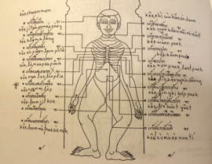
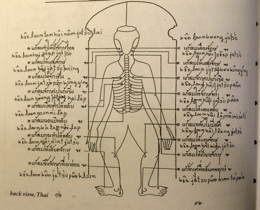
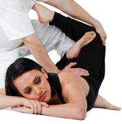

Thai- yoga massage
 Thai-yoga massage is a beautiful and effective healing art. The special yoga based techniques and unique meditative rhythm, make you feel as a whole body-mind-spirit experience. Traditionally a therapy session is performed on a mat on the floor, with the recipient in loose, comfortable clothing.
The practitioner will use hands, feet, elbows, thumbs as well as body mechanics and body counter-weight, stretching and many other techniques to adjust body posture, promote blood and energy circulation and allow the patient to relax into a meditative state. During the session a deep relaxation usually develops, the breath slows and deepens, capillaries expand, oxygen feeds every cell of the body, the mind is calm and the body is at rest. Treatment of specific medical conditions is based on the knowledge and skills of Thai-acupressure as an addition to the traditional treatment.
 Thai acupressure is an effective, simple and easy to learn method of treatment. It is suitable for treating orthopedic and pain disorders. Thai acupressure is based on pressing selected point formulas for many common conditions such as neck pain, shoulder pain, lower back pain, headache and more.
Thai massage is an effective way to relieve chronic muscle tension, headaches, neck and back pain, sciatic nerve pain, and digestive disorders, as well as effectively reducing the mental anxiety and physical discomfort brought on by the cumulative effects of everyday stress.
 The results of this work often lasts for days, leaving the receiver with a general sense of calm, openness, and mental clarity, accompanied by the unique feeling of having been plugged-in and recharged - physically, mentally, emotionally, and spiritually.